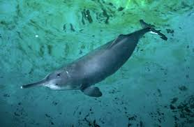
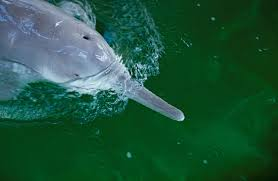
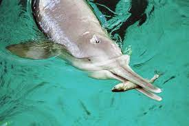

El delfín del Río Yangtsé o **Baiji** (*Lipotes vexillifer*) era una especie de delfín de río endémica del río Yangtsé en China. Este delfín era conocido por ser "la diosa del Yangtsé" y se caracterizaba por su largo y delgado pico y su coloración gris azulada pálida. Tristemente, el Baiji fue declarado **funcionalmente extinto** en 2006, convirtiéndose en el primer cetáceo en desaparecer debido a la influencia humana en la era moderna. Su declive se debió principalmente a la **sobrepesca**, el tráfico fluvial intenso, la contaminación y la construcción de presas. Su desaparición sirve como una advertencia sobre el impacto de la actividad industrial en los ecosistemas fluviales.


